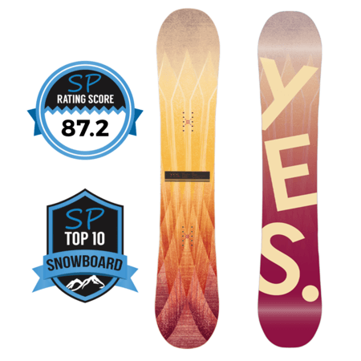
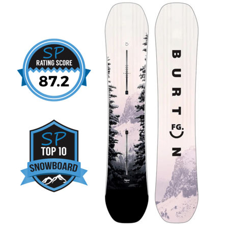
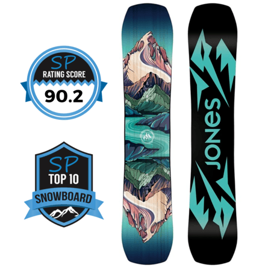
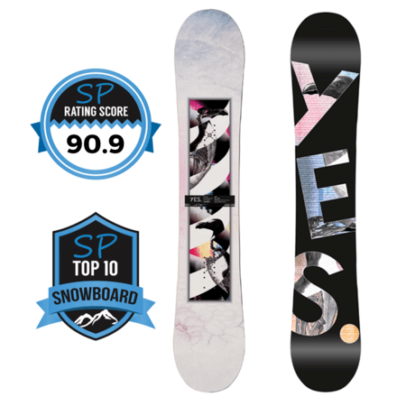
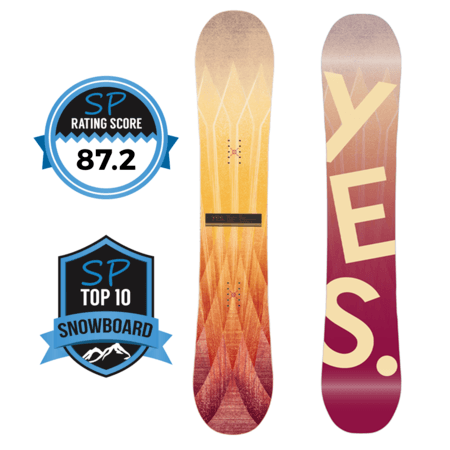
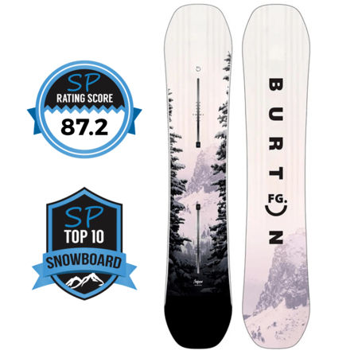
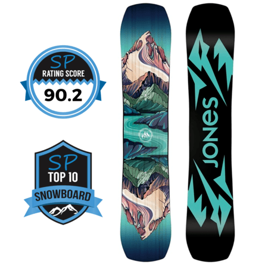
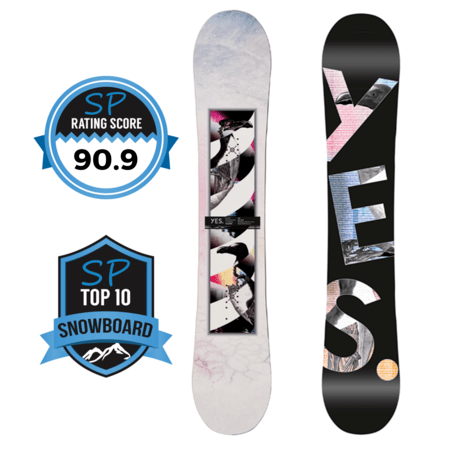

Top 5 Womens All Mountain Snowboards 2022/2023
Here's the top all mountain snowboards for women winter 2022/2023 ranked by "Snowboarding Profiles". You ready to hit the park? Bomb down some groomers? Or maybe some powder in the trees? Regardless of where you ride on the mountain, these boards will get you there!
5. Jones Airheart 2.0
Next up we have the Airheart 2.0 - another of the more aggressive boards on this list.
If you like to charge hard and carve all day but still want something that's not impossible
to slow down on, then the Airheart is a great option.
It's a hard charger, but it's also something that performs well on jumps and you can certainly
ride it switch and spin etc. In the park it definitely prefers the jump line over the jib line.

4. Yes Hello
The YES Hello is kind of like a mellower and lower price version of the Hel Yes (see #1 on this list).
If you like you like a board slightly only the softer, more playful side, but still with a stable feel underfoot
and something that's versatile enough to go anywhere and do anything, the Hello should be making your shortlist.
It's the easiest going, most playful ride on this list - and also the least expensive.

3. Burton Feelgood
The Burton Feelgood is the most aggressive board on this list. If I did a separate list for aggressive
all-mountain women's boards, then that's where this would belong (along with the Airheart 2.0 and Arbor Swoon
Camber at #5 and #6 respectively).
The Feelgood is one of the more aggressive carving machines in women's snowboarding and has a take no prisoners
attitude. If you don't ride this board, it will ride you.
If you're an experienced rider who likes to bomb hard and carve up a storm, and you don't need something for deep
powder, then the Feelgood should be squarely on your radar.
There is also a "Flying V" version of the Feelgood - which is a completely different beast - it's softer and more
playful and really quite different strengths and weakness to the Feelgood camber. I have included the scores for
both below - you'll see how different they ride.

2. Jones Twin Sister
If you’re looking for a board that is strong, or at least above average in every single category, then
the Twin Sister might just be that board.
This board will be a great partner on the mountain wherever you venture to and in whatever style you want
to ride – be it a playful jaunt down the mountain, creative freestyle riding, laying down some hard carves,
bombing down steeps, shredding through the trees or venturing into powder.
Basically, if you wanted to write a definition of "do-it-all" you'd simply have to show a picture of the
Twin Sister.

1. Yes Hel Yes
The Hel Yes is one of those boards that has that uncanny ability as a board that you can ride quite
aggressively on but then you can also dial it back and be more playful with it as well.
There's nothing this board can't do and nowhere that it can't go. An all-rounder that meets the definition
of do-it-all, go anywhere, anytime. It's also a great option for those that see icy conditions regularly.

Now that you've got your new board lets do a little maintenance before we hit the slopes!
Next up we have the Airheart 2.0 - another of the more aggressive boards on this list. If you like to charge hard and carve all day but still want something that's not impossible to slow down on, then the Airheart is a great option.
It's a hard charger, but it's also something that performs well on jumps and you can certainly ride it switch and spin etc. In the park it definitely prefers the jump line over the jib line.
4. Yes Hello
The YES Hello is kind of like a mellower and lower price version of the Hel Yes (see #1 on this list).
If you like you like a board slightly only the softer, more playful side, but still with a stable feel underfoot and something that's versatile enough to go anywhere and do anything, the Hello should be making your shortlist.
It's the easiest going, most playful ride on this list - and also the least expensive.
3. Burton Feelgood
The Burton Feelgood is the most aggressive board on this list. If I did a separate list for aggressive all-mountain women's boards, then that's where this would belong (along with the Airheart 2.0 and Arbor Swoon Camber at #5 and #6 respectively).
The Feelgood is one of the more aggressive carving machines in women's snowboarding and has a take no prisoners attitude. If you don't ride this board, it will ride you.
If you're an experienced rider who likes to bomb hard and carve up a storm, and you don't need something for deep powder, then the Feelgood should be squarely on your radar.
There is also a "Flying V" version of the Feelgood - which is a completely different beast - it's softer and more playful and really quite different strengths and weakness to the Feelgood camber. I have included the scores for both below - you'll see how different they ride.
2. Jones Twin Sister
If you’re looking for a board that is strong, or at least above average in every single category, then the Twin Sister might just be that board.
This board will be a great partner on the mountain wherever you venture to and in whatever style you want to ride – be it a playful jaunt down the mountain, creative freestyle riding, laying down some hard carves, bombing down steeps, shredding through the trees or venturing into powder.
Basically, if you wanted to write a definition of "do-it-all" you'd simply have to show a picture of the Twin Sister.
1. Yes Hel Yes
The Hel Yes is one of those boards that has that uncanny ability as a board that you can ride quite aggressively on but then you can also dial it back and be more playful with it as well.
There's nothing this board can't do and nowhere that it can't go. An all-rounder that meets the definition of do-it-all, go anywhere, anytime. It's also a great option for those that see icy conditions regularly.
Now that you've got your new board lets do a little maintenance before we hit the slopes!